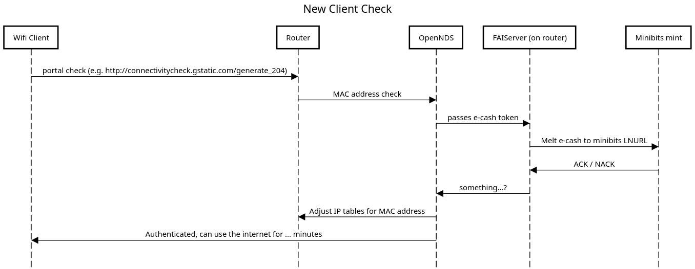

TollGate System Flow
OpenWRT plugin for Bitcoin-powered WiFi captive portal
System Flow Diagram
This sequence diagram illustrates the interaction flow between different components of the TollGate system
when a new client attempts to connect.

Flow Description
- New WiFi client connects and attempts to access the internet
- Router intercepts request and forwards to OpenNDS captive portal
- OpenNDS verifies client MAC address with FAIServer
- FAIServer processes e-cash token through Minibits mint
- Upon successful verification, client is granted internet access